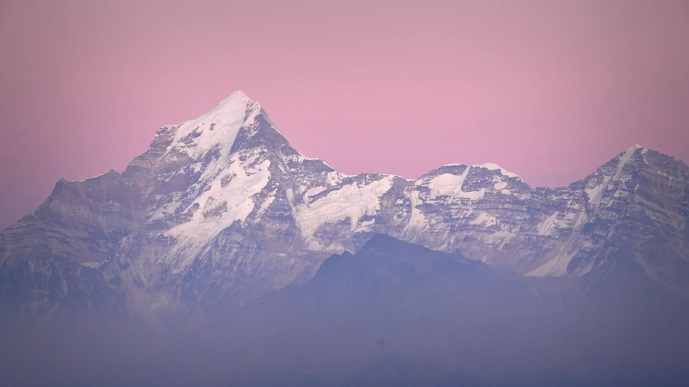

02Day 2 · Tugasikm 0.1
Above Joshimath
2,040mJoshimath · Night before, guesthouse
Day one ends in Joshimath. This morning a short drive climbs to Tugasi, where the walking starts.

Photo: Sumodm, CC BY-SA 4.0कुआरी पास · Chamoli, Uttarakhand
The trek in one line, and what you can do with it.
Kuari Pass is a winter snow trek with one camp and one big view: the giants of Garhwal, led by Nanda Devi.
4 stops on the map, then the climb. Scroll the stops and the map follows.
02Day 2 · Tugasikm 0.1
2,040mJoshimath · Night before, guesthouse
Day one ends in Joshimath. This morning a short drive climbs to Tugasi, where the walking starts.
02Day 2 · Khullara · 3,362 mkm 8.0
+800mGain today · From Tugasi
Khullara is the main camp, a clearing at about 3,360 m below the pass.
03Day 3 · Kuari Pass · 3,814 mkm 14.0
6kmFrom camp · There and back, 5–6 h
A morning climb from Khullara to Kuari Pass at about 3,814 m.
04Day 4 · Tugasikm 29.9
10kmToday · About 6–7 h
Back down from Khullara through Gulling to Tugasi, then the drive to Joshimath.
Best in Dec–Feb.
Dark: the months the trek’s sources call its best. Mid: possible. See all treks in December.
Base prices from 7 operators’ own pages, per person. GST and travel are often extra. Treqz sells nothing.
The practical things, then the questions people ask.
Joshimath has the last ATMs, and they can run out of cash. Draw what you need in Rishikesh.
TrekkaroSignal in Joshimath, and a weak one at Guling, the first camp. None on the rest of the trail.
Himalayan HikersNo charging points on the trek. Charge everything in Joshimath the night before.
Himalayan Dream TreksOperators get the permits, and the cost is in the trek fee. Carry ID and a medical certificate.
Bikat AdventuresAbout 30.0 km of walking over 5 days on the trail.
The highest point is 3,814 m, about 1,110 m above the start.
Its sources grade it Moderate.
Dec–Feb. It is also possible in Mar.
₹8,499 to ₹17,999 per person: base prices from 7 operators' own pages. GST and travel are often extra.
Signal in Joshimath, and a weak one at Guling, the first camp. None on the rest of the trail.
Operators get the permits, and the cost is in the trek fee. Carry ID and a medical certificate.
Joshimath has the last ATMs, and they can run out of cash. Draw what you need in Rishikesh.
Padded jacket (−10 °C), Thermal inners ×2 sets, Fleece or woollen layers ×2, Waterproof jacket or poncho, Trek pants ×2, Socks, 3–4 pairs, Woollen cap and balaclava, Gloves, two pairs. The full list is on the 3D page.
Yes: Dec–Feb is among its best months.
Its sources grade it Moderate and it takes 5 days on the trail, with a highest point of 3,814 m.
Pangarchulla, Valley of Flowers, Roopkund, Satopanth Tal, Ali–Bedni Bugyal.


Treks in December · Treks in January · Treks in February · Treks in Uttarakhand · Moderate Treks in Uttarakhand · Winter Treks in India · 5 Day Treks in India · Treks in Chamoli, Uttarakhand · Treks in India Under ₹10,000 · Kuari Pass vs Brahmatal · Kuari Pass vs Valley of Flowers · Kuari Pass vs Chopta Chandrashila · Kuari Pass vs Pangarchulla · Free trek finder · All treks in 3D